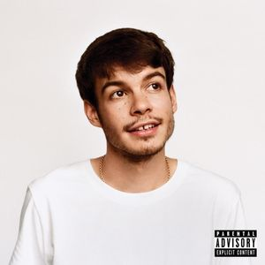

Released on August 1, 2017. It features 6 tracks with an additional 2 tracks on the Deluxe Edition.
A Brief Inquiry on Online Relationships - The 1975
Released on August 5, 2017. It features 8 tracks on this album alongside with the limited edition 'A Brief Inquiry on Offline Relationships' Deluxe Tracks.

Pony - Rex Orange County
Released on August 10, 2017. It features 5 tracks with 2 live versions and 2 acoustics versions of the tracks.
Wanderland 2019
This year we celebrate the most epic concert of the year. Get your tickets ready because this year's lineup is the most we've had. 3 days of nonstop partying with Drake, Lil Nas X, Frank Ocean, Russ, ASAP Rocky, Travis Scott, Eminem, J.Cole, Chris Brown, MIGOS, Jaden Smith, Chance the Rapper, Tyler The Creator, Childish Gambino, & Snoopdogg. This year we kick this off with the theme 'A Night You Can't Sweat Out.' Don't forget to mark December 20, 2017 on your calendars and bring your closest friends as we spend the night partying and dancing like there's no tomorrow!